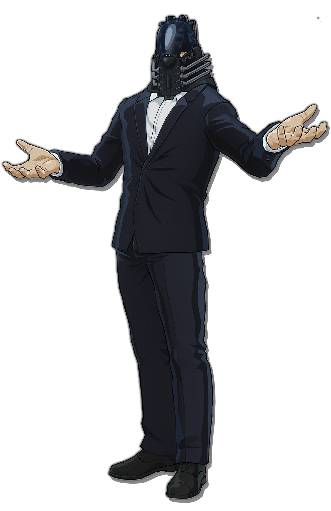

Special Characters
Special Saiyan, Wizard, Ninja & Quirk Characters
Special Characters are unique characters which are based on their Anime counterparts. They are high powered and difficult to beat. To face a Special Character, one must indicate interest to an admin who will then prepare a battle with one. Beating a Special Character provides the victor with crowns & xps ranging from 200-400 and 17-30 respectively, although if you lose, you lose 20 crowns and 2xp. A player can face a Special Character once every 7 days.
Saiyan Special Characters
VEGETA

The Saiyan Prince, born to the King and Queen of the now destroyed Planet Vegeta, he was bound to be a battle warrior from birth, with high power levels to back up his prince status. Vegeta escaped before the destruction of his planet by Frieza and trained long and hard to one day pay him back for destroying his home. He has not failed to be the fierce warrior he was born to be and has only grown from strength to strength with various power-ups along the way. He is definately one to fear even in his base form.
Race: Saiyan
Homeland: Planet Vegeta
Rank: God
Health: 29
CP: 35
Prize for defeating: 220crowns, 17xp
Skills
A-Punch: Give opponent 4 damage.
B-Kick: Give opponent 4 damage.
C-Galick Gun(atk): Vegeta's signature technique. Vegeta curls his fingers and places both his hands together at chest level facing the same direction. Then, once enough ki is gathered, he thrusts both hands forward to fire a powerful blast of energy. The result is a powerful, huge, fuchsia-colored ki beam that emanates from his hands and body. It is capable of destroying large planets if enough power is put into it. Give opponent 5 damage, cannot be neglected. 3cp to use.
D-Super Galick Gun(atk): A more powerful version of Vegeta's signature move. Give opponent 6 damage. 4cp to use.
E-Ki Shield(def): Defend against opponent's attack of 12dmg and below, can be used in opponent's turn. 4cp to use.
F-Super Charge(gain): Gain 3cp every turn for 3 turns.
G-Final Burst Cannon(atk): Vegeta draws his hands out to his sides as he powers up, creating an enormous whitish-purple aura around his body. Then, he throws his arms out in front of him and fires a large energy wave at the opponent, inflicting a huge amount of damage. Give opponent 7 damage, if neglected, opponent recieves 3 damage and you recieve 4. 4cp to use.
H-Tail Slicer(neg): A variation of the destructo disc, it is a razor sharp Ki disc which Vegeta uses to slice through opponent's attacks. Opponent's last attack is divided into health and cp equally for you, can be used in opponent's turn. 2cp to use.
I-Super Explosive Wave(atk): A technique where Vegeta bursts out ki from all over his body to give all opponents 6 damage. 4cp to use.
J-Galick Blazer(atk): Vegeta shoots a Galick Gun from one hand, with the other arm supporting the one that is firing the attack. Give opponent 4 damage, cannot be neglected. 3cp to use.
K-Disc Shield Repel(neg): Vegeta uses the power of a Destructo Disc to repel opponent's attack. All damage you recieve in your last turn is returned to opponent. 4cp to use.
L-Galaxy Breaker(atk): First, Vegeta generates electricity around his chest and converts it into a bluish-white aura around his body. Then, he thrusts his chest forward and fires a huge energy wave at the opponent, inflicting a high amount of damage as well as causing the opponent's body to violently contort. Give opponent 4 damage, opponent cannot use cp for 2 turns. 5cp to use.
M-Galick Blaster(atk/def): When Vegeta performs this move, he opens his mouth and fires a pink energy wave toward the opponent, inflicting a high amount of damage. Give opponent 4 damage, opponent cannot target you for any skill in their next turn. 5cp to use.
N-Shine Shot(gain): You gain 2cp and 2hp for every skill used against you for 5 of opponent's turns.
O-Ki Absorber(gain/neg): Vegeta takes the Ki attack used by his opponent and turns it into Genki, which is useful to him. Opponent's previous damage to you is added as health for you, no matter the skill. 4cp to use.
P-KKG - Saiyan Prince: Destroy all active neglect skills and paralyse all opponents, they all skip a turn, can be activated anytime, can be used no matter what. 3cp to use
Q-Final Flash(atk): This is formed by drawing both hands back while gathering ki. Then, Vegeta places the bottom of his palms together, forming a sphere of energy. Finally, he discharges a massive golden beam of energy with electric ki streaming around it towards his opponent to give them 6 damage. 4cp to use.
R-Lucora Gun(atk): A Continuous Energy Bullet. Give opponent 4 damage in current turn, then 2 damage in your next. 3cp to use.
Modes
Super Saiyan 1: This is an advanced transformation which multiplies the power of the user. Gain 6cp, copy 2 used moves from your opponent's card and give it to yourself. All damage you take from attacking skills are reduced by 2. 4cp to activate.
Super Saiyan 2: The direct successor to the first Super Saiyan transformation. It is very similar to the original form in appearance and attainment; however, the power output is far greater, as speed, strength, and energy output all drastically increase. Every end turn, Remove 2hp from all players that have other modes or beasts in the battle. All damages done by your attacking skills is increased by 2. 2cp to activate, do not use cp if already in Super Saiyan 1 mode.
Super Saiyan 4: Any neglect skill used by your opponent is neglected(no matter the skill) and gives you 2hp and 2cp. All your attacking skills damages are increased by 2. All damage you receive from attacking skills is reduced by 2. This mode automatically ends when your hp reaches 5 or below. 4cp to activate.
Super Saiyan God(Super Saiyan Red): This is a Saiyan transformation that grants the user godly ki, providing them with a power boost beyond Super Saiyan 3 and its predecessors. It is initially obtained through a ritual involving six righteous Saiyans or special divine training. All opponent's attacks are divided by 2 while in this mode, lose 1cp every turn. This mode automatically ends when you have no cp left. 4cp to activate.
Super Saiyan God Super Saiyan(Super Saiyan Blue): This is one of the strongest transformations of a Saiyan, it is attained by taking the godly power boost of the Super Saiyan God and raising it to the first Super Saiyan level of that. All your attacks damage are increased by 2. All damage you receive from attacking skills are divided by 1.5. This mode automatically ends when your cp reaches 5 or below. 5cp to activate.
Super Saiyan Blue Evolution: Gain 3cp. All attacks are increased by 3. All damage you recieve from skills that use cp is reduced by 3. If any other mode in the field is currently active, disable it for 5 of opponents end turns(opponent can activate a different mode). 5cp to use.
GOKU

Son Goku, Earth's strongest defender. Born to Bardock and Gine, he was sent from his home planet, Planet Vegeta, from a very early age because his parents feared for the his life as he had power levels which were quite low compared to other Saiyans. Unknown to everyone, Goku was a late bloomer and his power levels skyrocketed and far exceeded the normal Saiyan standards. He would grow to make the the legend of the Super Saiyan a reality as the first Super Saiyan for over a thousand years. He would not stop there, as he has grown stronger throughout the years and has been the first to unlock more and more modes, and most recently, he has been able to tap into the power of a Complete Ultra Instinct form that even gods have been having trouble with.
Race: Saiyan
Homeland: Planet Vegeta
Rank: God
Health: 32
CP: 35
Prize for defeating: 300crowns, 23xp
Skills
A-Punch: Give opponent 4 damage.
B-Kick Give opponent 4 damage.
C-Soaring Fist(atk): A technique where the user affects the air currents around him with ki to produce powerful shockwaves in order to strike the opponent at mid range, give opponent 6 damage. 3cp to use
D-Destructo Disc Hexa-Blade(atk): A Destructo Disc is a razor-sharp disc of Ki that can slice through almost any substance, Goku fires what appears to be a single Destructo Disc, which ends up splitting into ten separate discs. Give all opponents 5 damage, this cannot be neglected. 4cp to use.
E-God Ki(gain): Goku uses his godly ki to gain 4cp for 3 turns.
F-Super Ki Shield(def): Redirect opponents previous skill to him/her, can be used in opponent's turn. 4cp to use.
G-Kamehameha(atk): Goku's signature attack. A powerful Ki blast fired with two hands after concentrating a large amount of Ki, gives opponent 5 damage. 2cp to use.
H-Supreme Kamehameha(atk): Goku's signature attack with far more intensity, gives opponent 7 damage. 4cp to use.
I-Ki Nulifier(neg): Goku uses his ability to manipulate ki to nulify opponent's next 2 skills. 4cp to use.
J-Explosive Wave(atk): A technique where Goku bursts out ki from all over his body to give all opponents 5 damage, this can be used no matter what. 3cp to use.
K-Kiai(gain/neg): Opponent's damage is added as cp for you, max is 7.
L-Spirit Shield(def): Goku creates a shield of energy and uses it to defend against opponent's last attack of 6 damage and below. 3cp to use.
M-Ki Blast(gain): The most basic form of energy waves. Gain all used skills back except this one. 3cp to use.
N-Ultra Dragon Fist(atk): Goku makes a fist and charges at his opponent, when he is nearing his opponent, his energy will be amplified massively compared to Goku's normal power .Give opponent 5 damage, opponent cannot use cp in their next turn. 4cp to use.
O-Final Burst Cannon(atk): Goku draws his hands out to his sides as he powers up, creating an enormous whitish-purple aura around his body. Then, he throws his arms out in front of him and fires a large energy wave at the opponent. Opponent loses 2hp every turn for 5 turns. 4cp to use.
P-Infusion Explosion(nom): Goku concentrates a large explosion into the palm of his hands and directs it at opponents which confuses them. Destroy all time skills and all opponents must skip a turn. 3cp t use.
Q-Instant Transmission(nom): A technique for traveling long distances instantly. Opponent cannot target you for their next 2 skills.
R-Solar Flare(nom): Goku places his hands close to the center of their face with the fingers spread toward his eyes. He then provokes a white light to fire out and blind everyone watching. All opponents must waste a skill. 2cp to use
S-Spirit Shot(atk): A two-handed energy technique in which the user stretches their arms out and blows the opponents away with dual Kiai blasts. All opponents recieve 6 damage. 4cp to use.
T-KKG - God Ki Mastery: Goku can change the nature of his Ki to that of the gods, increasing his power drastically. All attacks are added by 2, instantly nulify every other KKG, used or not and if any opponent's mode is active, it is disabled for the rest of the match.
Modes
Super Saiyan 1: The first Super Saiyan for a 1000 years, this is an advanced transformation which multiplies the power of the user. Gain 6cp, copy 2 used moves from your opponent's card and give it to yourself. All damage you take from attacking skills are reduced by 2. 4cp to activate.
Super Saiyan 2: The direct successor to the first Super Saiyan transformation. It is very similar to the original form in appearance and attainment; however, the power output is far greater, as speed, strength, and energy output all drastically increase. Every end turn, Remove 2hp from all players that have other modes or beasts in the battle. All damages done by your attacking skills is increased by 2. 2cp to activate, do not use cp if already in Super Saiyan 1 mode.
Super Saiyan 3: This is the third form of Super Saiyan and the successor to the second transformation. This form extracts every drop of potential from a Saiyan's blood. Goku was the first to achieve the form and was able to do so after several years of vigorous training. For all time skills, you get 2cp for each of them every of your turn. All attacks are added by 1, all opponent's attacks are reduced by 1. 3cp to activate, do not use cp if already in Super Saiyan 2.
Super Saiyan 4: Any neglect skill used by your opponent is neglected(no matter the skill) and gives you 2hp and 2cp. All your attacking skills damages are increased by 2. All damage you receive from attacking skills is reduced by 2. This mode automatically ends when your hp reaches 5 or below. 4cp to activate.
Super Saiyan 5: All your attacks are multiplied by 1.5. All damage you take from attacking skills is reduced by 2. You lose 1cp every of your end turn. 4cp to activate.
Super Saiyan God(Super Saiyan Red): This is a Saiyan transformation that grants the user godly ki, providing them with a power boost beyond Super Saiyan 3 and its predecessors. It is initially obtained through a ritual involving six righteous Saiyans or special divine training. All opponent's attacks are divided by 2 while in this mode. This mode automatically ends when you have no cp left. 4cp to activate
Super Saiyan God Super Saiyan(Super Saiyan Blue): This is one of the strongest transformations of a Saiyan, it is attained by taking the godly power boost of the Super Saiyan God and raising it to the first Super Saiyan level of that. All your attacks damage are increased by 2. All damage you receive from attacking skills are divided by 1.5. This mode automatically ends when your cp reaches 5 or below. 5cp to activate.
Ultra Instinct: A higly advanced mental state, Goku's physical and mental parameters are vastly augmented, providing him with not only equally increased combat performance, but also giving him access to the Ultra Instinct ability, allowing him to instinctively dodge and attack any nearby threat in the most effective way possible, all his attacks are increased by 3, all opponents attacks that use cp are reduced by 2. All opponent's moves delay a turn before affecting you. 5cp to activate.
BEERUS

Race: Anthropomorphic Cat
Homeland: Unknown
Rank: God
Health: 38
CP: 40
Prize for defeating: 350 crowns, 26xp
Skills
A-Punch: Give opponent 4 damage.
B-Kick: Give opponent 4 damage.
C-Tail Slash(atk): Beerus uses his tail to give opponent 5 damage, cannot be neglected. 3cp to use.
D-Planetary Ki Blast(atk): Beerus is capable of producing ki blasts capable of destroying planets, give opponent 7 damage. 5 to use.
E-Godly Kiai(gain/neg): A special form of Ki emmision, opponent's last damage is added as health and cp to Beerus.
F-Double Axe Handle(atk): A physical technique where Beerus cups his hands together and reels back, then slams his fists on the opponent, give opponent 5 damage. 2cp to use.
G-Sealing Spell(neg): Opponents next attack is negated no matter what. 3cp to use.
H-Attack Altercation and Redirection(neg): A technique where Beerus uses his ki to catch an opponent's attack, then alters it and fires it again as their own attack, this is used to redirect opponent's last attack to him/her. 4cp to use, can be used in opponent's turn.
I-Paralyzing Gaze(nom): Beerus narrows his eyes and stares at his foe, and due to his raw power the foe is rendered almost completely immobile, opponent must skip their next turn. 2cp to use.
J-Cataclysmic Orb(atk): A ki ball that is similar to an atom, which Beerus fires by physically hitting it. The attack is said to be uncatchable and uncrushable, give opponent 5 damage, all skills that surpress Beerus' powers are destroyed, this cannot be neglected. 3cp to use.
K-God Ki(gain): Gain 4cp for 3 turns.
L-Godly Ki Shield(def): This creates a shield of God ki, which cannot be detected by normal ki, this shield can only be destroyed by a skill that cannot be neglected, but Beerus does not take damage from the attack.
M-Destruction Before Creation(atk): Beerus produces a sun-like aura sphere around his body then fires a purple energy wave at his opponent which can only be used when opponent's health is 5 and below, kill an opponent, he/she cannot revive by any means. 5cp to use.
N-After-Image Strike(def/atk): By doing this, Beerus moves so fast that he leaves an "after image" of himself which confuses his opponent, blocks opponents last skill and gives opponent 4 damage. 5cp to use.
O-Sphere Of Destruction(time): A huge energy sphere that resembles a yellow star. Opponent continously loses 2hp for every skill they use till the end of the battle.
P-Cloning(nom): Beerus is capable of creating clones of himself in order to aid him in battle against an opponent. Creates 4 clones, with all his skills, his KKG and modes. 5cp to use.
Q-Full Power Energy Wave(atk): A powerful energy wave fired from his right hand. Give opponent 5 damage. 2cp to use.
R-Ki Explosion(atk): An Explosive Wave variation that can be prolonged using ki. All opponents continously lose 3hp for 2 turns. 5cp to use.
S-Pressure Point Attack(atk): Beerus uses Pressure Point Attacks to render his opponents unconscious. Give opponent 5 damage, all opponent's attacks lose 2 attack potency, lasts for 2 opponent's turns, 4cp to use.
T-Power Supression Immunity(nom): As a god, Beerus is immune to having his power sealed. Neglect opponent's last skill. All attacks are uneglectable for 2 of his turns. 3cp to activate
U-KKG - God Of Destruction:
Starfall: All damage Beerus recieved from opponent's last 2 attacks is added as health. 2cp to use.
Comet: Opponent's defensive skills are rendered useless. 2cp to use.
Meteor: Beerus fuses 2 of his previously used attacks into one and gives opponent as damage. 2cp to use.
Modes
50% Power: Beerus charges up as he begins to get serious with his opponent, give all other players with modes 3 damage, all attacks are added by 1. 2cp to activate.
75% Power: Beerus begins to get even more serious with his opponent as an aura begins to develop around him which generates heat, all attacks are added by 2 and all cp-based damage is reduced by 2. 4cp to activate.
Full Power: Beerus reaches his full seriousness as an aura is fully developed around him, all attacks are multiplied by 1.5 and all damage is reduced by 1. 5cp to activate.
Imperfect Ultra Instinct: Beerus' ultra instinct mode, this has not been mastered and still has its downsides. All attacks that give 5 and above damage are delayed by a turn before affecting Beerus. 3cp to activate.
WHIS

Ninja Special Characters
PAIN(NAGATO)

MADARA
SASUKE
NARUTO
Wizard Special Characters
JULIUS NOVACHRONO

ZEREF DRAGNEEL

MELIODAS

Quirk-Human Special Characters
DEKU

ENDEAVOR

ALL FOR ONE

ALL MIGHT